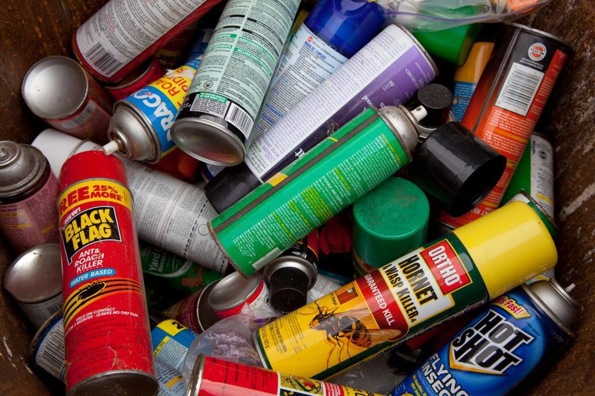

Hazardous waste includes materials that pose a significant risk to human health or the environment due to their toxic, corrosive, flammable, or reactive properties. Proper management of hazardous waste is crucial to prevent contamination and safeguard public health. This website provides information about hazardous waste, its impact, and ways to manage it safely.

Facts & Figures
Hazardous waste comes from various sources, including industrial processes, household products, and medical facilities. Mismanagement of this waste can lead to severe environmental and health consequences. Here are some important facts about hazardous waste:
Hazardous waste can be found in everyday items such as batteries, paints, cleaners, and pesticides.
Improper disposal of hazardous waste can lead to soil and water contamination, posing serious risks to ecosystems and human health.
Each year, millions of tons of hazardous waste are generated worldwide, with industrialized countries producing the majority.
Regulations and proper disposal methods are essential to manage hazardous waste safely and effectively.
Types of Hazardous Waste
Hazardous waste can be categorized based on its chemical properties and the risks it poses. Understanding these categories helps in proper waste management and disposal. Here are the main types of hazardous waste:
Toxic Waste: Contains harmful substances that can cause health problems or death if ingested, inhaled, or absorbed through the skin. Examples include pesticides, heavy metals, and certain solvents.
Corrosive Waste: Includes materials that can corrode metals or destroy living tissue upon contact. Common examples are strong acids and bases like sulfuric acid and sodium hydroxide.
Flammable Waste: Contains substances that can easily catch fire, posing fire and explosion hazards. Examples include gasoline, alcohols, and certain paints.
Reactive Waste: Includes materials that are unstable and can explode or release toxic gases when exposed to heat, pressure, or water. Examples include certain chemicals used in laboratories and industrial processes.
Infectious Waste: Generated by healthcare facilities, this waste includes items contaminated with blood, bodily fluids, or other infectious materials. Proper disposal is critical to prevent the spread of disease.
Properly identifying and managing these types of hazardous waste is essential to minimize their impact on human health and the environment.
Solutions
Managing hazardous waste safely requires strict adherence to regulations and best practices. Here are some strategies for managing hazardous waste:
Safe Disposal: Ensure hazardous waste is disposed of at authorized facilities that specialize in handling and treating these materials. Never dispose of hazardous waste in regular trash bins or down the drain.
Recycling: Some hazardous materials, like batteries and electronics, can be recycled to recover valuable components and reduce environmental impact.
Proper Storage: Store hazardous waste in secure, labeled containers to prevent leaks, spills, and accidental exposure. Keep these materials out of reach of children and pets.
Education and Training: Educate employees, residents, and the community about the dangers of hazardous waste and the importance of proper disposal and management.
Support Hazardous Waste Collection Programs: Participate in local hazardous waste collection events and programs to safely dispose of unwanted materials.
By following these guidelines, we can reduce the risks associated with hazardous waste and protect both the environment and public health.